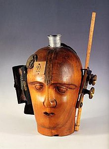

Galeria




Ubú Imperator es un cuadro pintado por Max Ernst en 1923. Este óleo sobre tela representa un Padre Ubú rojo en forma de peonza. Está conservada en el Museo nacional de Arte moderno, en París
The Art Critic es una obra de 1919-1920 de Raoul Hausmman
Fountain es un readymade, de Marcel Duchamp creado en 1917, pieza fundacional de una manifestación artística consistente en la utilización de objetos ya existentes y que normalmente no se consideran artísticos, dotándolos de un nuevo significado.
Rueda de bicicleta (originalmente en francés, Roue de bicyclette) es un objeto de arte encontrado del artista francés Marcel Duchamp, que consiste en una rueda de bicicleta en su horquilla sobre un taburete de madera.
En 1913, en su estudio en París, él montó la rueda invertida verticalmente (es decir, la parte que tradicionalmente va arriba hacia abajo, y viceversa) sobre un taburete alto de madera.
Kurt Schwitters Merz creo esta obra en 1921
L.H.O.O.Q. es una obra de arte de Marcel Duchamp realizada en 1919. Es uno de los ready-mades de Duchamp. En esta obra el objeto es una tarjeta postal barata con una reproducción de la conocida obra de Leonardo da Vinci, la Mona Lisa, a la que Duchamp dibujó un bigote y una perilla con lápiz y le puso un título.